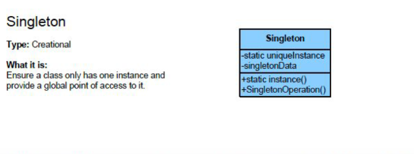
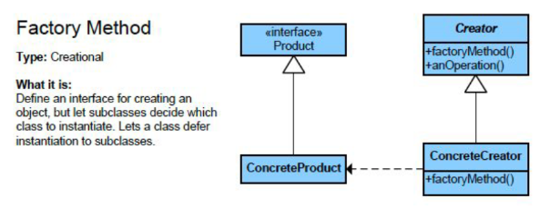
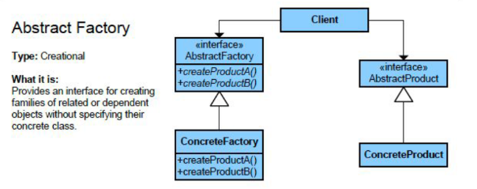
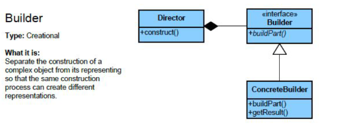
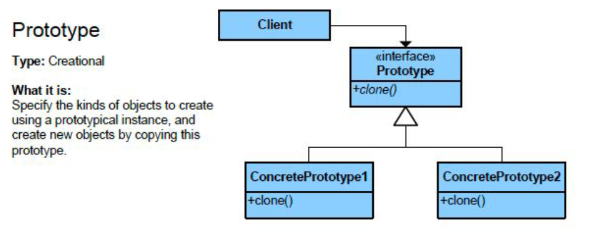
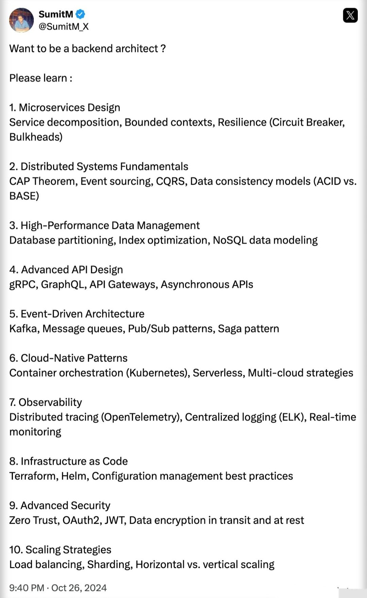

Patterns
-
Creational Patterns
-
Singleton: Ensure a single global instance -
FactoryMethod: Creates Objects without specifying classes -
Builder: Construct complex objects step-by-step
-
-
Structural Patterns
-
Adapter: Connects incompatible interfaces- The Adapter pattern allows objects with incompatible interfaces to collaborate by creating an intermediate class, known as the Adapter, that translates one interface into another.
- The Adapter pattern wraps an existing object to make its interface compatible with what the client expects.
- Key Components of the Decorator Design Pattern
- Target Interface: The interface expected by the client
- Adaptee: The existing class with an incompatible interface that needs integration.
- Adapter: Implements the target interface and uses the adaptee internally, acting as a bridge.
- Client: Uses the target interface
- Different implementations of Adapter Design Pattern
- Class Adapter (Inheritance-based)
- Object Adapter (Composition-based)
- Two-way Adapter
- Example:
-
Decorator: Adds new functionality to an object- Key Components of the Decorator Design Pattern
- Component Interface
- Concrete Component
- Decorator: Abstract class wrapper
- Concrete Decorator
- Key Features:
- Open-Closed Principle (OCP): Extend object behavior without altering existing code.
- Composition over Inheritance: Combine multiple behaviors without creating a rigid class hierarchy.
- Example:
- Key Components of the Decorator Design Pattern
-
Facade Method: Simplifies complex subsystems- Provides a simplified interface to a complex subsystem
- It delegate client requests to appropriate subsystem objects.
- Key Features:
- Reduced Coupling: Minimizes client dependency on system internals
- Encapsulation
- Example https://www.geeksforgeeks.org/system-design/facade-design-pattern-introduction/
-
-
More: https://dev.to/syridit118/understanding-the-adapter-design-pattern-4nle
- Adapter vs Decorator: What it does:
- Adapter Wraps objects to convert its interface.
- Decorator Wraps objects to add new functionalities or behaviors
- Adapter Changes the interface of an object to make it compatible with another.
- Decorator Adds new functionality to an object without changing its interface.
-
Behavioral Patterns
-
Strategy: Define a family of algorithms and make them interchangeable- The Strategy pattern is about selecting the appropriate behavior (or strategy) at runtime.
- Key Components of the Strategy Design Pattern
- An abstract class or interface known as the Strategy Interface
- it guarantees that all strategies follow the same set of rules
- Concrete Strategies are the various implementations of the Strategy Interface
- An abstract class or interface known as the Strategy Interface
-
Observer:- Enables objects to subscribe to and receive updates from another object at runtime.
- Key Components of the Observer Design Pattern
- Subject Interface
- Observer Interface
- ConcreteSubject: Implements the subject interface, A specific subject that holds actual data
- ConcreteObserver: Implements the observer interface and subscribe to subject updates
-
Command
-
Singleton
Singleton
- Ensures that a class has only one instance and provides a global point of access to that instance.
- Useful for managing shared resources or configurations.

Factory Method
Factory
- Factory Defines an interface for creating an object, but lets subclasses decide which class to instantiate.
- It centralizes object creation while allowing flexibility for different product types.

Abstract Factory
Abstract Factory
- Abstract Factory Provides an interface for creating families of related or dependent objects without specifying their concrete classes. It’s a “factory of factories.”

Builder
Builder
-Builder Separates the construction of a complex object from its representation, allowing the same construction process to create different representations. Ideal for objects with many optional parameters.

Prototype
Prototype
-Prototype Creates new objects by copying an existing object (the prototype) instead of creating new instances from scratch. This is often more efficient for complex object creation.

As a Backend dev , how many concepts can you explain from below :
-
Event-Driven Architecture
-
Saga Pattern
-
CQRS (Command Query Responsibility Segregation)
-
Event Sourcing
-
Circuit Breaker Pattern
-
Distributed Tracing
-
CAP Theorem
-
Idempotency
-
Data Sharding
-
API Gateway
CQRS (Command Query Responsibility Segregation)
CQRS (Command Query Responsibility Segregation)
-
Idea: Split your system into two parts:
- Command side : handles writes (insert, update, delete).
- Query side : handles reads (fetching data).
- This avoids a single model being overloaded with both responsibilities.
- Example: E-commerce Order System
-
Traditional way:- You have an OrderService with methods:
- One service, one database, one model : simple but becomes complex when scale grows.
-
CQRS way:- Command side:
- OrderCommandService: responsible for writes.
- Stores orders into the Order DB (write-optimized).
- Query side:
- OrderQueryService : responsible for reads.
- Fetches orders from a Reporting DB (read-optimized, maybe NoSQL or cache).
- Command side:
-
Data Sync:- When a new order is created, the command side publishes an event (e.g., OrderCreatedEvent).
- A consumer updates the read DB with the new order.
-
Benefits:- Reads can be scaled separately from writes.
- Read side can be optimized (caching, denormalization).
- Fits naturally with Event-Driven systems.
